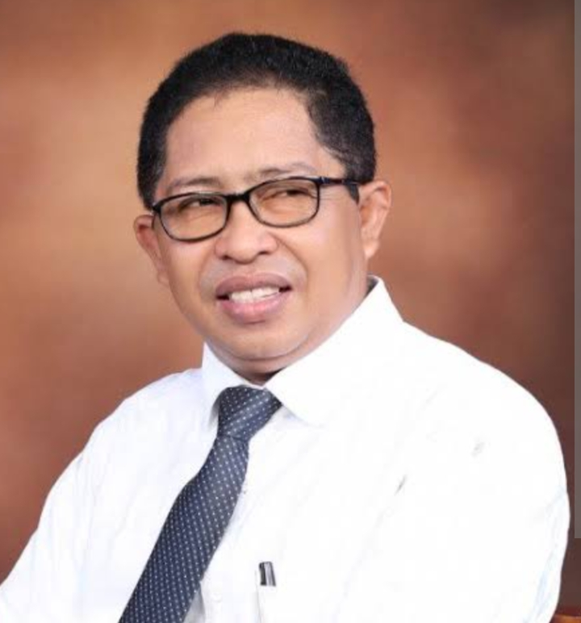

Kongres Ke-4 Himpunan Pelajar Mahasiswa Sula (HPMS) yang akan digelar pada 22 Desember 2025 di Ternate memunculkan dua arus pemikiran mengenai figur Ketua PP HPMS ke depan. Pertama, kelompok yang menegaskan bahwa HPMS harus tetap dipimpin oleh mahasiswa dan pelajar aktif sebagai wujud konsistensi identitas organisasi. Kedua, kelompok yang menilai bahwa HPMS membutuhkan kepemimpinan senior yang memiliki kapasitas intelektual dan kekuatan finansial untuk memperkuat daya tawar organisasi.
Dua pandangan ini sama-sama memiliki landasan rasional. Mahasiswa menawarkan idealisme, energi gerakan, dan kedekatan dengan problem sosial. Sementara itu, senior menawarkan pengalaman, jaringan eksternal, serta kemampuan menggerakkan sumber daya yang lebih memadai.
Dalam konteks organisasi modern, perdebatan “mahasiswa atau senior” seharusnya tidak dipahami sebagai pertentangan, melainkan sebagai peluang untuk melahirkan kepemimpinan hybrid: pemimpin yang mampu memadukan semangat muda dengan kapasitas matang. Model ini memberi ruang bagi mahasiswa tetap menjadi motor gerakan, sementara peran senior diperkuat dalam dukungan strategis, pendanaan, dan perluasan jaringan.
Agar keputusan kongres tidak terjebak pada kepentingan kelompok, forum perlu menetapkan kriteria objektif bagi calon ketua: kapasitas intelektual, rekam jejak organisasi, kemandirian finansial, dan komitmen pada kaderisasi. Selain itu, struktur organisasi perlu diatur ulang dengan skema dual-support antara kepengurusan harian dan dewan pembina senior, serta penyusunan program jangka menengah yang realistis.
Kongres Ke-4 HPMS di Ternate harus menjadi momentum pembaruan organisasi. Figur ketua yang terpilih nanti bukan sekadar representasi kelompok, melainkan representasi visi besar: menguatkan HPMS sebagai pusat gagasan, laboratorium kader bangsa, dan mitra kritis pembangunan Kepulauan Sula.
Penulis: Dr. Mochtar Umasugi
Kembali ke Beranda